Comunicaciones II · Proyecto Integrador 2026 · Escenario S5
¿Por qué un receptor FSK falla con 24 dB de Eb/N0? Telemetría binaria en una planta de agua
“La presente Divulgación Pública de la Ciencia, a través del siguiente Desarrollo Web, tiene una ruta de circulación nacional sin enfoque diferencial y está dirigido a la comunidad o público objetivo conformado por jóvenes, adultos, empresarios y/o empresa en género literario informativo de tipo Blog, con componente digital a través de soporte web”.
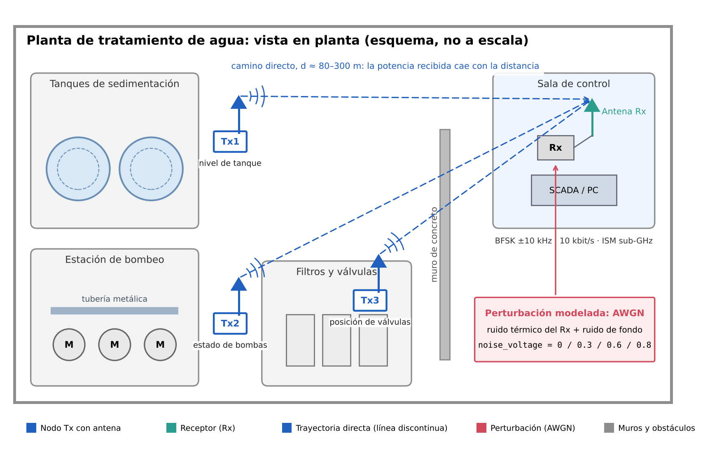
Pregunta guía: ¿qué necesita un receptor no coherente de BFSK para recuperar sin errores los bits de un nodo lejano cuando el ruido es comparable a la señal?
Escenario y problema
Una planta de tratamiento de agua supervisa niveles de tanques, estados de bombas y posiciones de válvulas desde una sala de control, a distancias de 80 a 300 m.
Cablear cada punto es costoso, así que se usan nodos inalámbricos de bajo consumo en bandas ISM sub-GHz. En esas bandas son habituales 2-FSK y GFSK, por ejemplo en Wireless M-Bus para la lectura remota de medidores [3], [5]. Cada nodo envía tramas cortas: estados binarios y medidas lentas.
Fenómeno físico. Al aumentar la distancia, la potencia recibida cae hasta acercarse al ruido térmico del receptor. Ese ruido es aproximadamente gaussiano, blanco y aditivo, por lo que se modela como AWGN: r[n] = x[n] + w[n]. En GNU Radio se controla con noise_voltage del bloque Channel Model.
Lectura de la imagen. Tx1, Tx2 y Tx3 son los nodos con antena; las líneas discontinuas son los caminos directos hacia la antena Rx; el recuadro rojo es la perturbación modelada. El muro de concreto y la tubería metálica indican el entorno, aunque esta versión del proyecto no modela multitrayectoria.
Diseño técnico
Modulación elegida: BFSK de fase continua. Su envolvente es constante (permite amplificadores no lineales eficientes) y admite detección no coherente con un discriminador, sin recuperar la fase de la portadora. Alternativa descartada: BPSK. Necesita unos 4 dB menos de Eb/N0 y ocupa menos espectro, pero exige recuperar portadora y fase con osciladores baratos. A 10 kbit/s esa complejidad no se justifica.
h = 2Δf/Rs = 2·10 kHz / 10 kHz = 2 · B ≈ 2(Δf + Rs) = 40 kHz (Carson)
La desviación de la base (20 kHz) se redujo a 10 kHz: con h = 2 los tonos siguen siendo ortogonales y el ancho de banda baja de 60 a 40 kHz. Con 10 kbit/s, 40 nodos que envían dos tramas de 64 bits por segundo ocupan el 51 % de la capacidad.
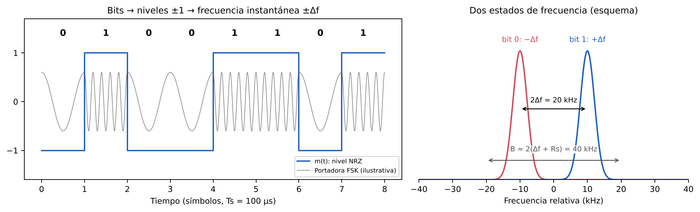
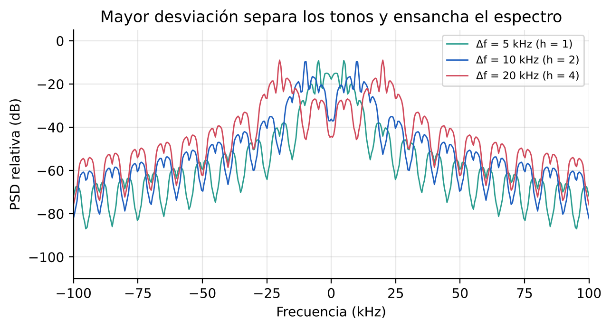
GNU Radio
Partimos de Guia2_BASE_FSK_Canal_Discriminador.grc y creamos S5_BFSK_TxCanalRx_GrupoE1.grc. El transmisor y el canal se conservan; el receptor es nuestro.
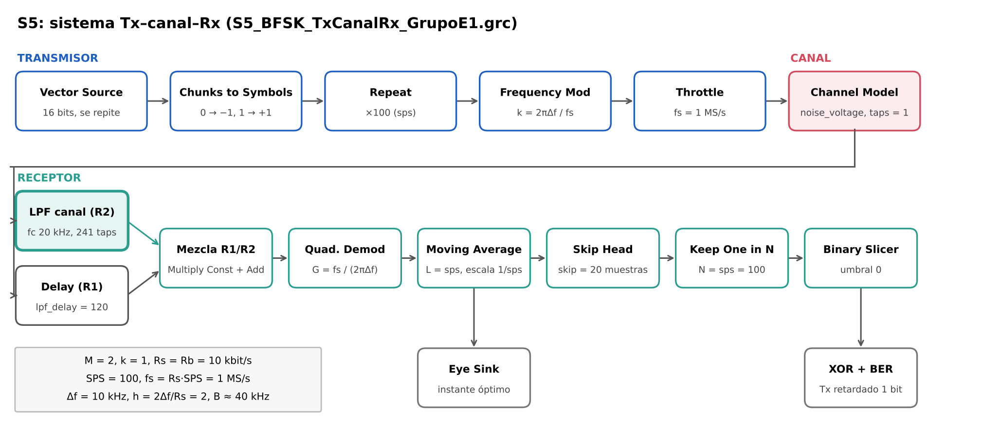
- Filtro de selección de canal (FIR paso bajo, corte 20 kHz, 241 coeficientes): deja pasar la banda útil y elimina el 96 % del ruido.
- Quadrature Demod con ganancia fs/(2πΔf): convierte la frecuencia instantánea en niveles ±1.
- Moving Average de 100 muestras: integra cada símbolo; es el filtro acoplado al pulso rectangular.
- Skip Head (20) + Keep One in N (100): toma la última muestra de cada ventana, donde el ojo está más abierto.
- Binary Slicer con umbral 0, más una rama de validación con XOR y BER sobre 1000 bits.
El retardo del filtro (120 muestras) se compensa en R1 con un bloque Delay, de modo que ambos receptores usan el mismo instante de muestreo y la misma referencia (1 bit de retardo).
Experimentos y resultados
Cambiamos una sola variable, noise_voltage, en cuatro niveles. Todo lo demás quedó fijo.
| Prueba | Severidad | noise_voltage | SNR en 1 MHz | Eb/N0 | BER R1 | BER R2 |
|---|---|---|---|---|---|---|
| A | Referencia | 0 | ∞ | ∞ | 0 | 0 |
| B | Suave | 0.3 | 10.5 dB | 30.5 dB | 0 | 0 |
| C | Media | 0.6 | 4.4 dB | 24.4 dB | 2.4 × 10⁻² | 0 |
| D | Fuerte | 0.8 | 1.9 dB | 21.9 dB | 1.3 × 10⁻¹ | 0 |
Lo que encontramos. Con 24 dB de Eb/N0, un detector ideal no comete errores. Aun así, R1 falla porque su discriminador ve todo el ruido de 1 MHz: con 4.4 dB de SNR queda por debajo del umbral de unos 10 dB [4]. Aparecen clicks, saltos de fase de casi 2π que el integrador no logra borrar. R2 filtra antes de detectar, gana unos 14 dB de SNR y no comete errores.
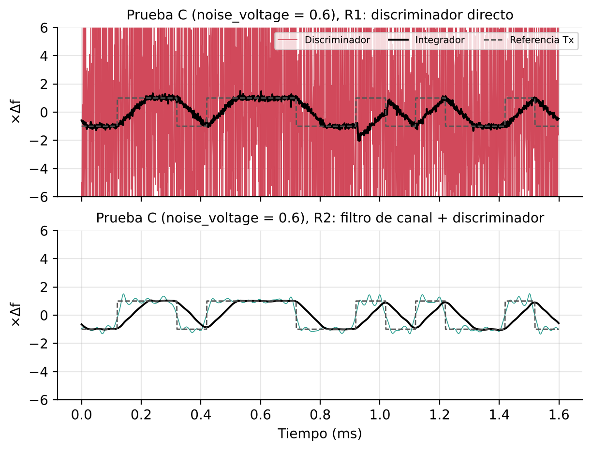
Verificación en GNU Radio
Ejecutamos el GRC en GNU Radio 3.10.12 y repetimos las cuatro pruebas con los dos receptores. Las capturas de la prueba C muestran lo mismo que el modelo: con R1 los clicks tapan la salida del discriminador y aparecen errores; con R2 la señal sigue la referencia y el ojo queda abierto.
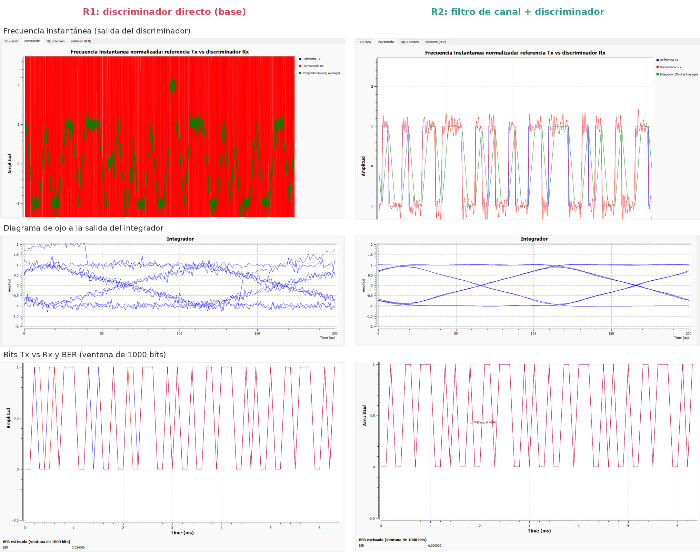
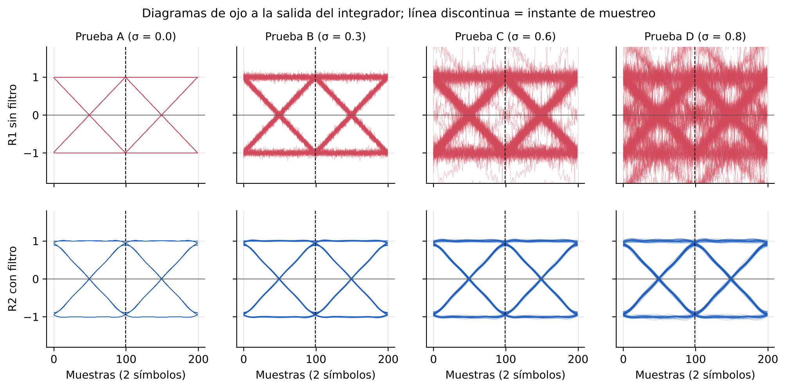
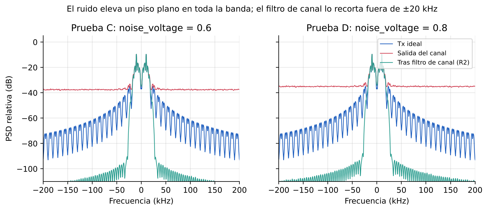
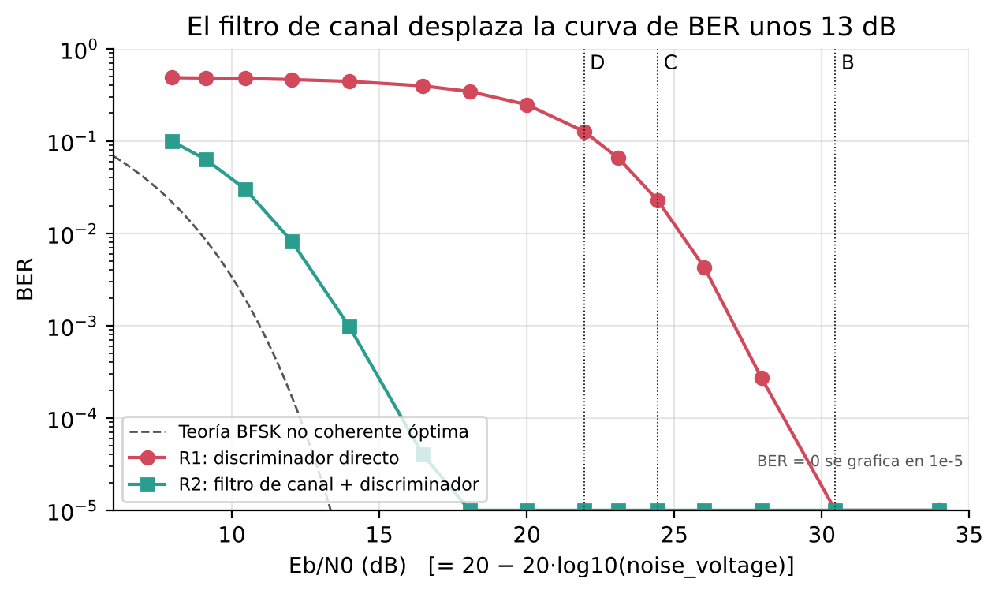
Las cifras de BER provienen de un modelo numérico en Python que reproduce la cadena del GRC con los mismos retardos y la misma regla de muestreo (10⁵ bits por prueba). El código está en la carpeta simulacion_referencia/ del repositorio. Luego ejecutamos el GRC en GNU Radio 3.10.12: A y B sin errores; en C, R1 = 0.022–0.033 y R2 = 0; en D, R1 = 0.155–0.169 y R2 = 0, en línea con el modelo.
Glosario
Haz clic en cada término para ver su definición.
BFSK / CPFSK
Modulación por desplazamiento de frecuencia binaria: el bit 1 se envía con un tono en +Δf y el bit 0 en −Δf. En CPFSK la fase es continua entre símbolos, lo que reduce los lóbulos laterales del espectro.
Índice de modulación h
h = 2Δf/Rs. Relaciona la separación de los tonos con la tasa de símbolos; con h entero los tonos son ortogonales. Aquí h = 2.
AWGN
Ruido blanco gaussiano aditivo: modelo del ruido térmico del receptor, con la misma potencia en todas las frecuencias. En GNU Radio se controla con noise_voltage.
Eb/N0
Energía por bit dividida por la densidad de ruido. Permite comparar modulaciones con distintas tasas; en este proyecto Eb/N0 = 100/σ².
BER
Tasa de error de bit: fracción de bits recibidos que no coinciden con los transmitidos. El GRC la estima en ventanas de 1000 bits.
Discriminador de frecuencia
Bloque que mide cuánto gira la fase entre dos muestras para obtener la frecuencia instantánea. En GNU Radio es Quadrature Demod.
Efecto umbral (clicks)
Cuando la SNR a la entrada del discriminador baja de unos 10 dB, el ruido hace saltar la fase casi 2π y aparecen impulsos en la salida. Es la causa de los errores de R1.
Diagrama de ojo
Superposición de muchos intervalos de símbolo. Donde el “ojo” está más abierto está el mejor instante para tomar la decisión.
Multimedia


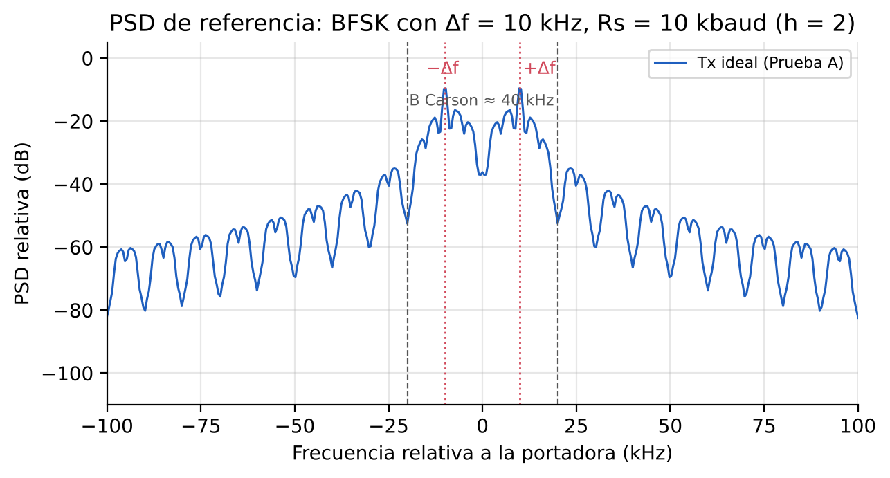
Fig. 5 · PSD de referencia
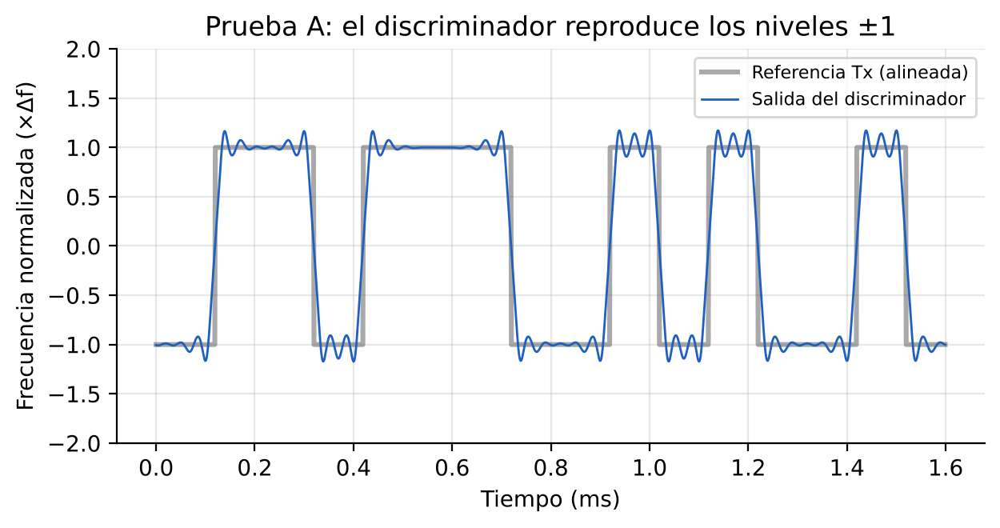
Fig. 7 · f instantánea (A)
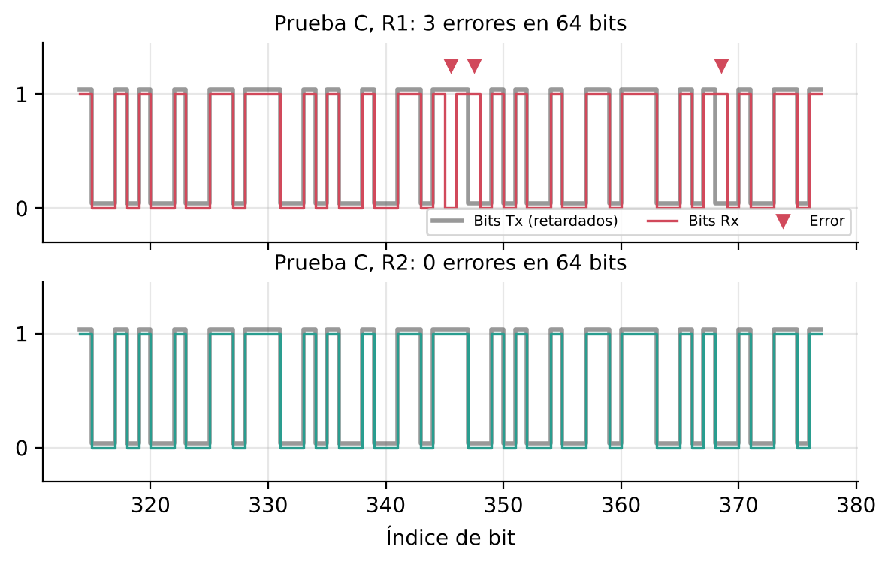
Fig. 10 · Bits Tx y Rx (C)
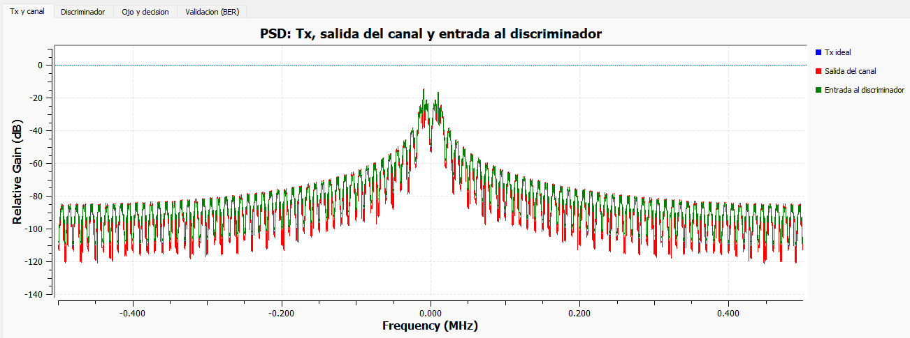
GNU Radio · PSD (A)
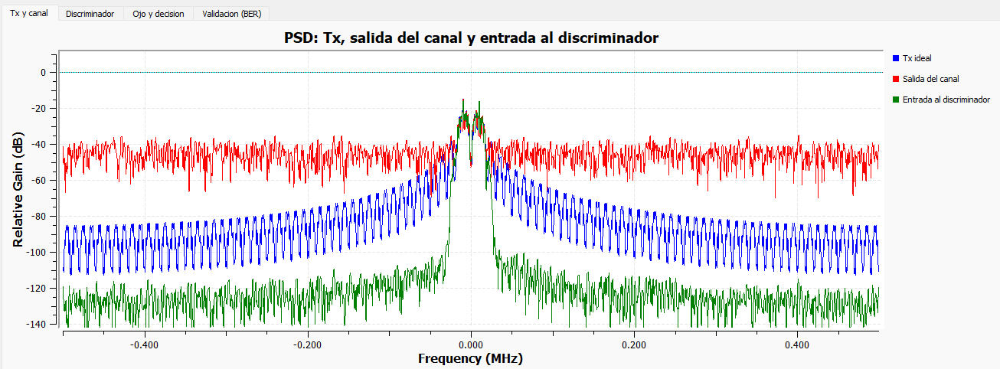
GNU Radio · PSD (C, R2)
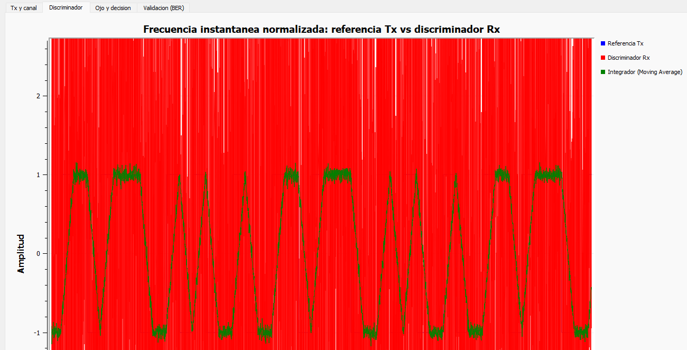
GNU Radio · discriminador (B, R1)
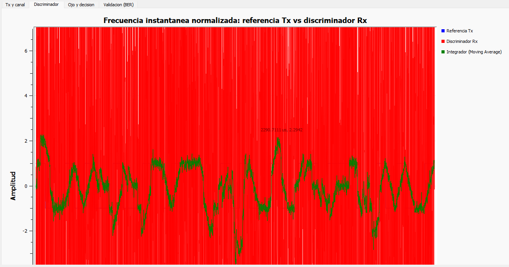
GNU Radio · discriminador (D, R1)
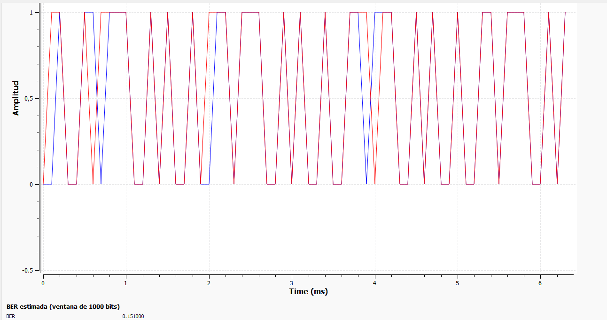
GNU Radio · BER 0.151 (D, R1)
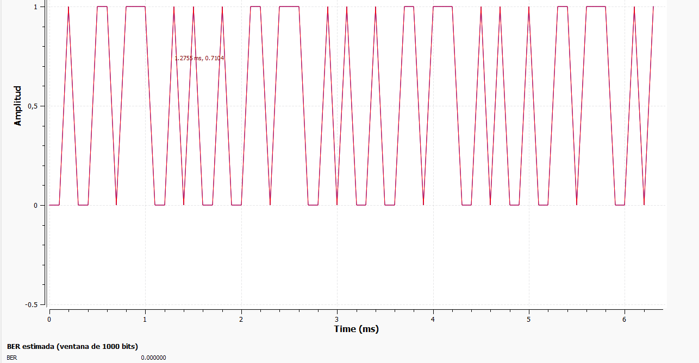
GNU Radio · BER 0 (D, R2)
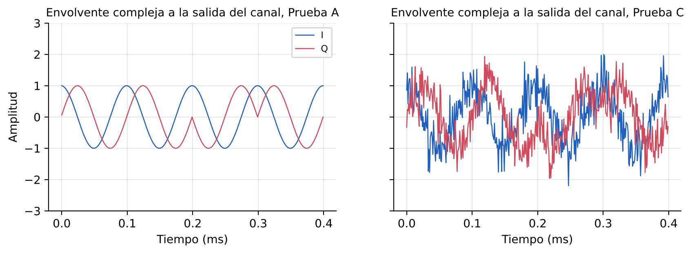
Fig. 13 · Envolvente complejaEnlace por agregar cuando se publique el video
Bitácora y aprendizaje
Observamos envolvente, PSD y frecuencia instantánea de FSK, ideal y con AWGN. Vimos las espigas en la frecuencia instantánea, pero aún no sabíamos qué significaban para los bits.
Elegimos S5 y BFSK. Llenamos la ficha de Decisión Técnica Ciega con predicciones antes de simular.
Bajamos la desviación de 20 a 10 kHz (h = 2) para reducir el ancho de banda a 40 kHz sin perder ortogonalidad.
El primer receptor (discriminador + integrador + slicer) fallaba en la prueba C con Eb/N0 alta. Investigamos y encontramos el efecto umbral del discriminador.
Agregamos un filtro de selección de canal antes del discriminador. El retardo del filtro (120 muestras) desplazó los bits recuperados un bit respecto a la referencia; lo resolvimos con Skip Head = 120 mod 100, la referencia Tx retardada 1 bit y un Delay en R1.
Al ejecutar el GRC, cambiar de receptor con un bloque Selector desalineaba los flujos (BER ≈ 0.62). Lo reemplazamos por una mezcla ponderada en la que ambos caminos corren siempre. Con eso, los resultados en GNU Radio coinciden con el modelo.
Comparamos R1 y R2 en las cuatro pruebas y barrimos el ruido para encontrar el límite de R2.
Reflexión metacognitiva
Qué aprendimos. Eb/N0 no basta para predecir la BER de un receptor real: importa cuánto ruido deja entrar cada etapa. El diagrama de ojo fue la herramienta que más nos ayudó a entender el instante de muestreo.
Qué cambiaríamos. Habríamos medido la SNR a la entrada del discriminador desde el principio, en lugar de mirar solo la salida.
Qué profundizaríamos. Sincronización con Symbol Sync, corrección de desfase de frecuencia, GFSK y ruido impulsivo de los motores de las bombas.
Uso de IA y herramientas
Usamos GNU Radio Companion 3.10, Python (NumPy, SciPy, Matplotlib), LaTeX y Git/GitHub. Usamos un asistente de IA (Claude, de Anthropic) para redactar borradores del informe y del blog, escribir el modelo numérico de referencia y generar las figuras esquemáticas.
Validación humana: el equipo revisó cada parámetro y cada cálculo, ejecutó el GRC en GNU Radio, comparó sus capturas con el modelo y es responsable del contenido final.
Referencias
- J. G. Proakis y M. Salehi, Digital Communications, 5.ª ed. New York, NY, USA: McGraw-Hill, 2008.
- B. Sklar, Digital Communications: Fundamentals and Applications, 2.ª ed. Upper Saddle River, NJ, USA: Prentice Hall, 2001.
- A. Harney, “Designing a wireless transceiver system to meet the Wireless M-Bus standard,” Analog Devices, Appl. Note AN-0987. analog.com
- M. A. Ahaneku, “FM threshold and methods of limiting its effect on performance,” Nigerian J. Technol., vol. 26, no. 1, pp. 5–11, mar. 2007. core.ac.uk
- STMicroelectronics, “Introduction to sub-1GHz,” STM32 MCU Wiki. wiki.st.com
- GNU Radio Project, documentación de bloques. wiki.gnuradio.org
Comentarios
¿Te quedó clara la explicación del efecto umbral? ¿Qué cambiarías en el receptor? Déjanos tu comentario o pregunta en el repositorio:
Abrir un comentario en GitHub Issues
También puedes comentar en el foro del aula virtual del curso, donde publicamos el enlace a este blog. Las opiniones que recibamos se resumirán aquí como retroalimentación.
Autoría y responsabilidad. Jorge Mario Sánchez Arévalo, Sebastián Díaz Zuleta y Ferney Esteban Vinasco Flórez declaramos que este trabajo es de nuestra autoría, que citamos las fuentes utilizadas, que declaramos el uso de herramientas de IA y que respondemos por la veracidad técnica del contenido.